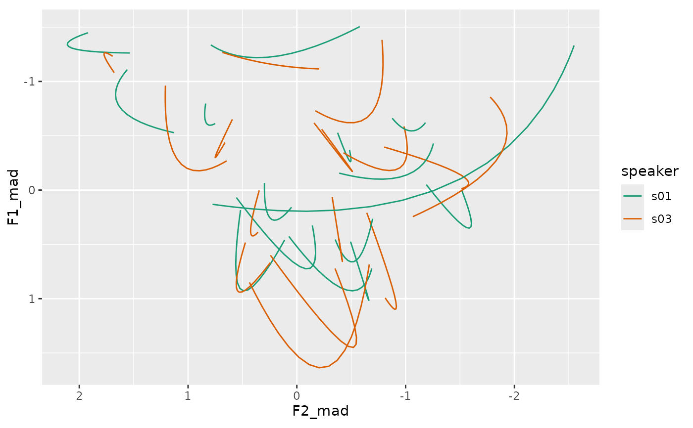

Generic Formant DCT Normalization Procedure
Usage
norm_dct_generic(
.data,
...,
.token_id_col,
.by = NULL,
.param_col = NULL,
.L = 0,
.S = 1/sqrt(2),
.by_formant = FALSE,
.by_token = FALSE,
.names = "{.formant}_n",
.silent = FALSE,
.drop_orig = FALSE,
.call = caller_env()
)Arguments
- .data
A data frame of formant DCT coefficients
- ...
<tidy-select>One or more unquoted expressions separated by commas. These should target the vowel formant data columns.- .token_id_col
<data-masking>A column that identifies token ids.- .by
<tidy-select>A selection of columns to group by. Typically a column of speaker IDs.- .param_col
A column identifying the DCT parameter number.
- .L
An expression defining the location parameter. See Details for more information.
- .S
An expression defining the scale parameter. See Details for more information.
- .by_formant
Whether or not the normalization method is formant intrinsic.
- .by_token
Whether or not the normalization method is token intrinsic
- .names
A
glue::glue()expression for naming the normalized data columns. The"{.formant}"portion corresponds to the name of the original formant columns.- .silent
Whether or not the informational message should be printed.
- .drop_orig
Should the originally targeted columns be dropped.
- .call
Used for internal purposes.
Details
The following norm_dct_* procedures were built on top of
norm_dct_generic().
Normalizing DCT Coefficients
This will normalize vowel formant data that has already had the Discrete Cosine Transform applied (see dct) with the following procedure:
Location
.Land Scale.Sexpressions will be used to summarize the zeroth DCT coefficients.These location and scale will be used to normalize the DCT coefficients.
Location and Scale expressions
norm_dct_generic normalizes DCT coefficients directly. If \(F_k\) is the kth DCT coefficient the normalization procedure is
$$ \hat{F}_k = \frac{F_k - L'}{\sqrt{2}S} $$ $$ L' = \begin{cases} L & \text{for }k=0\\ 0 & \text{for }k>0 \end{cases} $$
Rather than requiring users to remember to multiply expressions for \(S\) by \(\sqrt{2}\), this is done by norm_dct_generic itself, to allow greater parallelism with how norm_generic works.
Note: If you want to scale values by a constant in the normalization,
you'll need to divide the constant by sqrt(2).
The expressions for calculating \(L\) and \(S\) can be
passed to .L and .S, respectively. Available values for
these expressions are
.formantThe original formant value
.formant_numThe number of the formant. (e.g. 1 for F1, 2 for F2 etc)
Along with any data columns from your original data.
Examples
library(tidynorm)
library(dplyr)
ggplot2_inst <- require(ggplot2)
track_subset <- speaker_tracks |>
filter(
.by = c(speaker, id),
if_all(
F1:F3,
.fns = \(x) mean(is.finite(x)) > 0.9
),
row_number() %% 2 == 1
)
track_dcts <- track_subset |>
reframe_with_dct(
F1:F3,
.by = speaker,
.token_id_col = id,
.time_col = t,
.order = 3
)
track_norm <- track_dcts |>
norm_dct_generic(
F1:F3,
.token_id_col = id,
.by = speaker,
.by_formant = TRUE,
.L = median(.formant, na.rm = TRUE),
.S = mad(.formant, na.rm = TRUE),
.param_col = .param,
.drop_orig = TRUE,
.names = "{.formant}_mad"
)
#> Normalization info
#> • normalized with `tidynorm::norm_dct_generic()`
#> • normalized `F1`, `F2`, and `F3`
#> • normalized values in `F1_mad`, `F2_mad`, and `F3_mad`
#> • token id column: `id`
#> • DCT parameter column: `.param`
#> • grouped by `speaker`
#> • within formant: TRUE
#> • (.formant - median(.formant, na.rm = TRUE))/mad(.formant, na.rm = TRUE)
#>
head(track_norm)
#> # A tibble: 6 × 10
#> speaker id vowel plt_vclass word .param .n F1_mad F2_mad F3_mad
#> <chr> <dbl> <chr> <chr> <chr> <dbl> <int> <dbl> <dbl> <dbl>
#> 1 s01 0 EY eyF OKAY 0 10 0.177 0.811 -0.0952
#> 2 s01 0 EY eyF OKAY 1 10 -0.0837 -0.304 -0.148
#> 3 s01 0 EY eyF OKAY 2 10 0.381 0.0821 0.0822
#> 4 s01 1 AH uh UM 0 10 0.345 -0.121 0.820
#> 5 s01 1 AH uh UM 1 10 0.136 0.207 -0.255
#> 6 s01 1 AH uh UM 2 10 0.0306 -0.0174 -0.0843
full_tracks <- track_norm |>
summarise(
.by = c(speaker, vowel, .param),
across(
F1_mad:F3_mad,
mean
)
) |>
reframe_with_idct(
F1_mad:F3_mad,
.by = c(speaker, vowel),
.param_col = .param
)
head(full_tracks)
#> # A tibble: 6 × 6
#> speaker vowel .time F1_mad F2_mad F3_mad
#> <chr> <chr> <int> <dbl> <dbl> <dbl>
#> 1 s01 EY 1 -0.528 1.13 0.506
#> 2 s01 EY 2 -0.532 1.15 0.515
#> 3 s01 EY 3 -0.541 1.18 0.531
#> 4 s01 EY 4 -0.554 1.23 0.553
#> 5 s01 EY 5 -0.573 1.30 0.578
#> 6 s01 EY 6 -0.596 1.37 0.604
if (ggplot2_inst) {
ggplot(
full_tracks,
aes(F2_mad, F1_mad, color = speaker)
) +
geom_path(
aes(group = interaction(speaker, vowel))
) +
scale_y_reverse() +
scale_x_reverse() +
scale_color_brewer(palette = "Dark2") +
coord_fixed()
}
